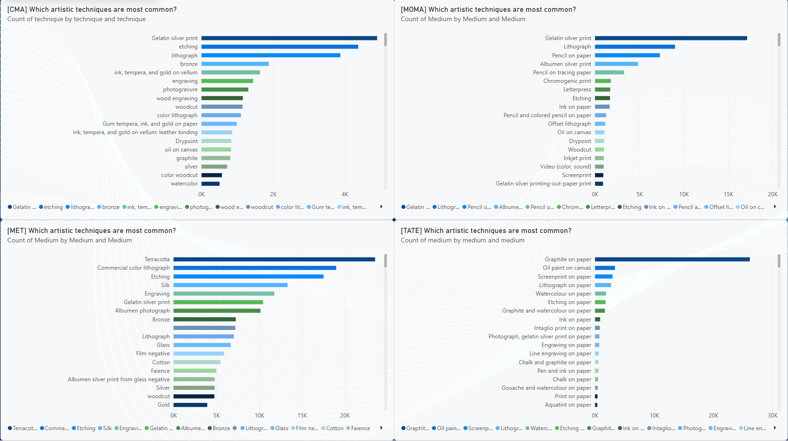
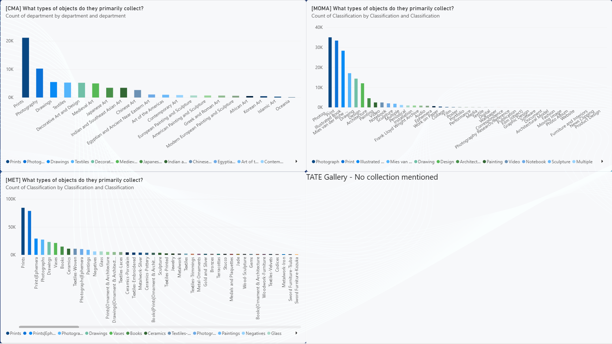
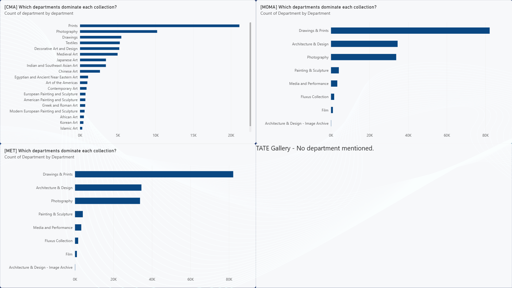
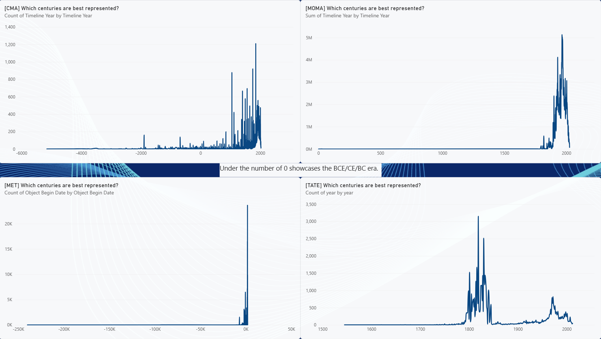

Week 3 Internship Report
First Week (Sunday - Thursday)
Sunday:I reviewed and read the links that Christophe provided, which showcase the datasets of Museums Collections. After that, I looked at the projects that were linked on WCMA, saw student project, specifically Pink Art, and how they Visualized the data whilst making it interactive. Moreover, with all the inspirations I have gotten, I chose PowerBI once again to visualize the data, while also reminding myself to improve the comments Mr. Christophe had before during Week 1. I chose to start with the Cleveland Museum of Art as it were the latest one.
Monday:Cleaned up the data in the CMA table, as there were inconsistencies in the data. I have added the Museum of Modern Art as well, so I could compare the two museums and their collections. After that, I started doing the analytics, what I have observed for the CMA is that they would pick artists from the same country or region more, whilst MOMA would pick a wider range of nationalities. CMA as well has a larger amount of artists, while MOMA has less. As for techniques, the two museums has similarities, Gelatin Silver Print and Lithograph has shown high usage from the artists, while for the other techniques they differ so much. For the collections, this shows similar results as well, photoraphy and prints has shown that it was high and had more collections on the museums.

Tuesday:I once again added new museums to review, TATE Gallery and also the Metropolitan Museum of Art, I have noticed that their dataset was pretty clean and had minimal errors. After that, I started doing the analytics again, I started with the timeline of when it was created. For CMA and MOMA, the date had texts which included BCE/CE/BC, or it had a range of years (ex: 1980-98) so I had to create a new column where it was a whole number. I did this by The creation_date_earliest and creation_date_latest columns use the dataset's earliest and latest known dates, allowing artworks with date ranges or uncertain dates to be represented consistently. A Timeline Year column was then generated as a single representative year based on these values, making it easier to plot artworks on a chronological timeline. Finally, Period Start and Period Label columns were created to group artworks into broader time periods, helping reduce clutter and improve readability in Power BI visualizations. Moreover, for MOMA I did the same with MOMA This custom Power Query formula was created to automatically extract a usable year from MoMA's highly inconsistent date formats. It identifies the first valid year in each date string, converts BCE dates into negative values, and keeps CE dates as positive values, allowing artworks from different historical periods to be displayed on a single chronological timeline. The approach also avoids manually cleaning over 160,000 records while preserving the original date information in the dataset. As a result, Power BI can sort and visualize artworks chronologically, including ancient works dated in BCE alongside modern works.
Wednesday:I proceeded to add more findings, such as the departments and the artist that were presented the most. After all of that, I started doing the real Findings:
Findings:
PowerBI Collection Link
CMA appears to have the widest geographic distribution, with strong representation across Asia, Africa, Europe, and the Americas. While, MoMA and the Met show denser concentrations in Europe and North America, reflecting their stronger focus on modern Western art. Tate also demonstrates broad international coverage, having focus on Europe, America, and some parts of Asia.

Across all four museums, printmaking and paper-based techniques appear among the most common artistic methods. CMA and MoMA are dominated by gelatin silver prints, lithographs, and etchings, while the Met shows a stronger presence of materials such as terracotta and silk. Tate differs from the others, with graphite on paper being by far the most common medium, highlighting its large collection of drawings and works on paper. These differences suggest that each museum's collection reflects distinct collecting priorities and areas of specialization.

CMA is led by artists such as Edward S. Curtis, while Tate is represented by J. M. W. Turner. MoMA and the Met also contain many works attributed to unidentified, anonymous, or commercial creators, highlighting the diversity of contributors represented in their collections. Overall, the results suggest that each museum's collection reflects its unique collecting priorities and historical focus.

The collections show some clear differences in what each museum focuses on collecting. CMA and the Met have large numbers of prints, photographs, and drawings, while MoMA is heavily focused on photographs, prints, and design-related works. CMA also stands out for its strong representation of Asian, medieval, and decorative arts departments, reflecting its broader encyclopedic collection. Overall, the collections reveal different priorities, with some museums focusing on specific art forms while others aim to represent a wider range of cultures and object types.

Overall, prints, drawings, and photography are widely dominated on each museum shown. However, CMA has a much wider spread across departments such as Asian, Medieval, Egyptian, and Decorative Arts, reflecting its broader encyclopedic collection. In contrast, both MoMA and the Met are heavily dominated by Drawings & Prints, with Photography and Architecture & Design also making up significant portions of their collections. This suggests that while MoMA and the Met are more focused on particular collection areas, CMA aims to represent a wider range of cultures, historical periods, and artistic traditions.

The timeline shows that all four museums are most heavily represented by works from the 18th to 20th centuries, with the highest concentrations occurring in the 19th and 20th centuries. CMA has the broadest historical range, extending far into the BCE period, while MoMA, the Met, and Tate are much more concentrated on modern and contemporary works. Tate's collection is particularly centered around the late 18th and early 19th centuries, whereas MoMA peaks in the 20th century, reflecting its focus on modern art.

All four museums continue to acquire works, but their collections appear to have expanded most rapidly during a handful of significant periods. CMA shows relatively consistent acquisition activity across the 20th and 21st centuries, while MoMA experiences several noticeable spikes, particularly during the mid-1900s. The Met and Tate also displayed even larger peaks in specific years.
Conclusion:Comparing the four museum datasets shows that each institution has a distinct collecting focus despite sharing some common trends. Prints, drawings, and photography appear prominently across most collections, while CMA stands out for its broader representation of different cultures and historical periods through departments such as Asian, Medieval, Egyptian, and Decorative Arts. In contrast, MoMA and the Met are more concentrated in areas such as Drawings & Prints, Photography, and Architecture & Design, reflecting their stronger emphasis on modern and visual media-focused collections. Overall, examining museum collections as data reveals how institutional priorities, collecting practices, and acquisition histories shape the stories that museums preserve and present.